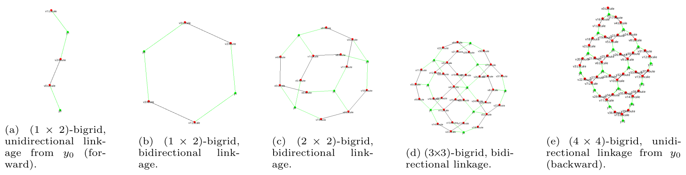
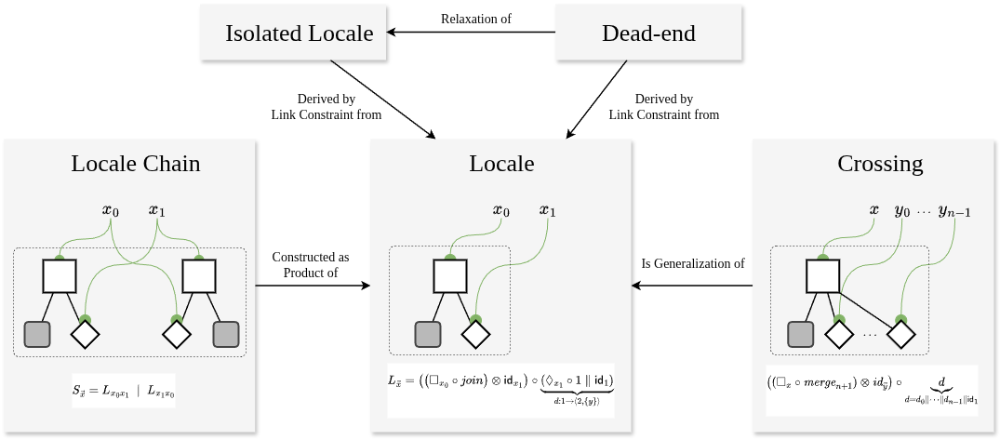

Introduction to Bigraphical Models for Algebraic Swarm Equations
Wait—equations for swarms?
Yes, algebraic equations, but with a twist: they come with visual notations built from (bi)graphical structures.
This matters when working with systems like drone swarms or robot collectives, where agents move in space, interact locally, and must coordinate globally. Algebra here isn’t just numbers; it’s a language for structure. Combined with visual bigraphs, it becomes a powerful tool for describing collective behaviors.
Algebraic Spaces
Bigraphs extend ordinary graphs with two complementary dimensions:
- Locality: who is “inside” or “near” whom?
- Connectivity: who is linked or able to communicate?
By combining these, bigraphs provide a unified algebraic and visual framework for systems where geometry meets interaction.
Specifically, bigraphs are extended here into so-called bi-spatial structures: modular, grid-like building blocks that define discrete spatial layouts.
These can model drones flying in formation, robots sorting themselves on a grid, or agents exploring an environment.
Examples
The following figures illustrate exemplary topological structures built from this “syntax of space” (which are formalized using our bigraphical axioms):

Why It Matters
- Concrete + formal: Models are both visually intuitive and mathematically precise.
- Composable: Complex swarms are built from simple axioms (“bi-spatial axioms”), ensuring modularity.
- Dynamic: Agents evolve via reaction rules, giving rise to algebraic swarm equations that capture both motion and coordination.
- Debuggable: Equations can be analyzed by "calculators" and through extensions like 3D raycasting, so swarm evolution can be observed in real time.
Foundation of UniAgent: Bigraphical Models
The UniAgent platform builds on a small set of bi-spatial axioms, which are algebraic rules that define how discrete locales/spaces/realms/... connect. These axioms form the backbone for modeling swarms as algebraic spaces, where agents move and interact.
Think of them as the LEGO®-like bricks for swarm modeling.
 This figure shows an overview of the essential bi-spatial axioms.
Read more about it here: